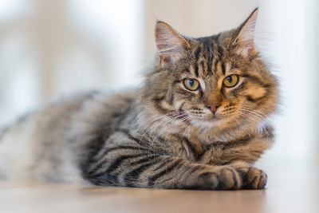
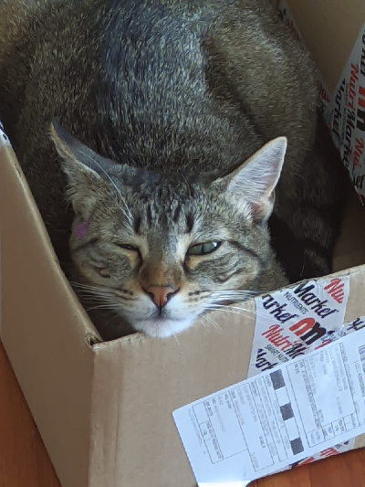
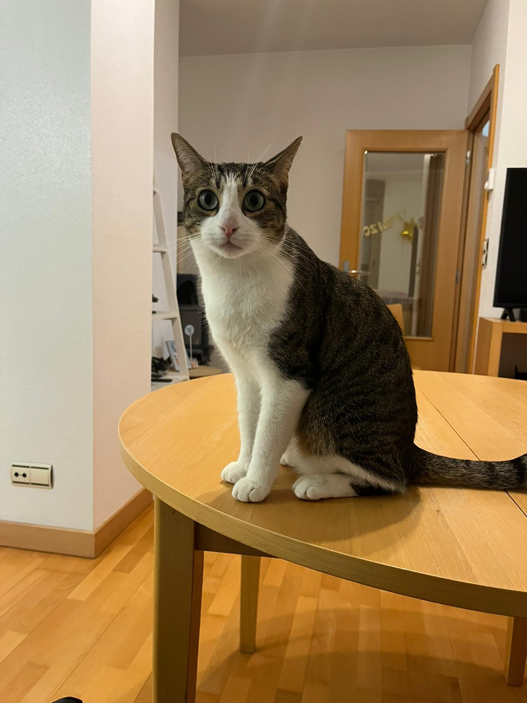
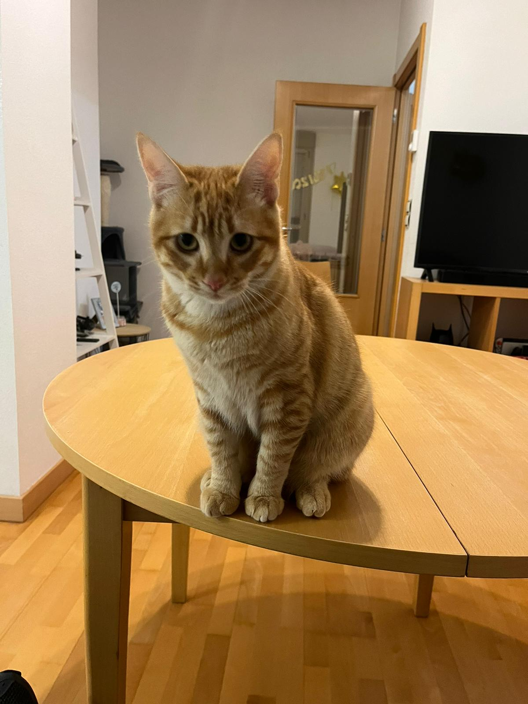

This company is run by cats, geared towards cats,
to help cats. You, human, are out.

Our boss

The final boss, she (yes, its a girl). She make tons of loud,
you can imagine that.

The middle boss, she love get out and run to their humans

The little boss, the night terror. Imposible to sleep with him in the same room
Cats, with their graceful demeanor and expressive eyes, embody a unique charm that captivates hearts effortlessly.
Their soft purrs and gentle nuzzles create a soothing symphony of companionship. In their playful antics and graceful movements,
one finds a source of joy that transcends words. A cat's presence, a silent poetry that speaks volumes,
adds a touch of warmth and magic to every moment.
Are you sure that prefer dogs?
i don't know how peoples prefer that idiot animal.